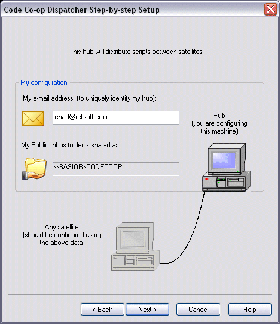

Even in a LAN-only configuration, Code Co-op will still need a way to identify your hub. This is why you have to provide an e-mail address for your hub. If the machine has no email account, invent a fake address. Remember that this e-mail address must be used when configuring the satellites.
Notice one important piece of information displayed in this dialog: My Public Inbox is shared as:, followed by a network path (machine name and share name). Remembet to use this network path when configuring the satellites.

This concludes the configuration of the hub.